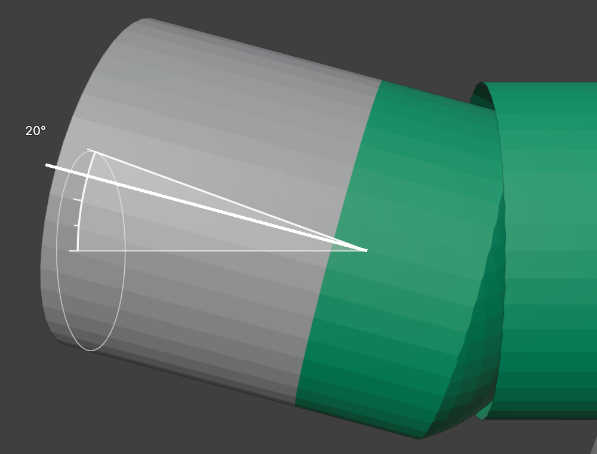
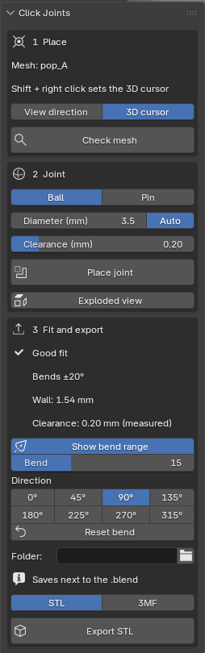

Click Joints
Good fit
, measured in mm.


1 Place
Set the 3D cursor and click Place joint.
2 Joint
Ball or pin. Auto picks the largest size that fits.
3 Fit
Wall and clearance on your mesh, plus the bend range for a ball joint.
Export
One STL or 3MF per part, in mm.
 Click Joints
Click Joints